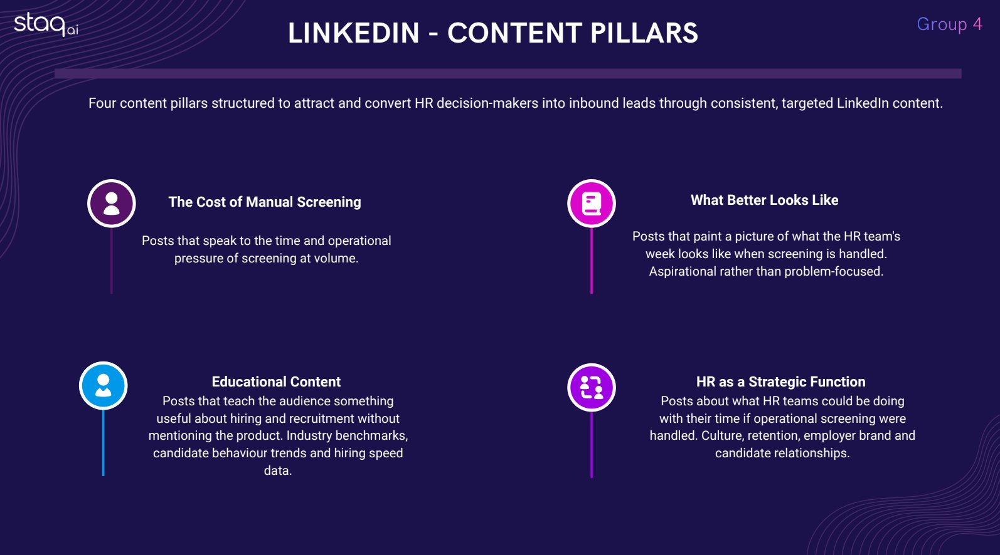
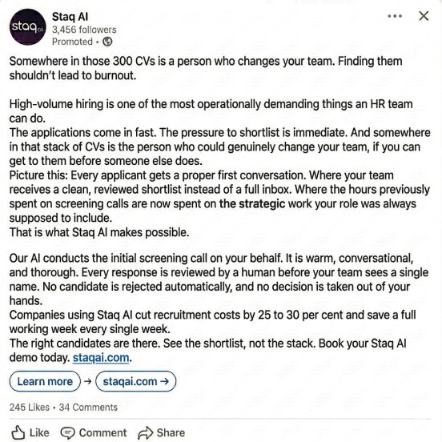
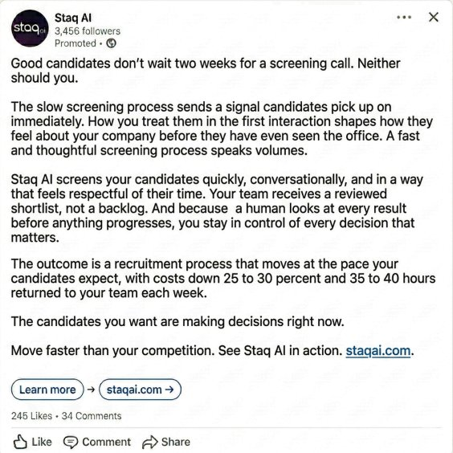
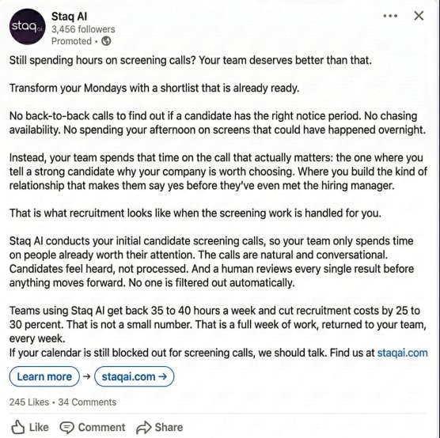
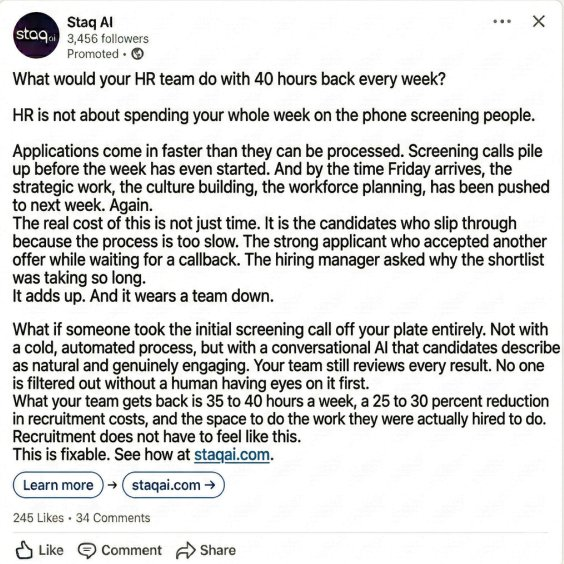

The setup
A live consultancy project with Staq AI, an AI recruitment startup incubated at Dogpatch Labs in Dublin. Our team was brought in to support the founder on brand and marketing. My focus area was LinkedIn: brand toolkit, organic lead generation strategy, and content.
The insight
Early stage B2B founders do not buy from polished corporate accounts. They buy from people they trust. For Staq AI, that meant the founder's own LinkedIn presence was a bigger lever than a company page. The strategy had to make her show up as someone worth listening to, not as a product on a page.
The work
I built the LinkedIn brand toolkit so the founder had a consistent visual and verbal identity to post under. I developed the organic lead generation strategy: who to target, what content would earn their attention, and how to convert engagement into conversations. I also created content for the platform that the founder could publish.
To do this well, I completed Hootsuite's Social Media Marketing Professional Certificate during the project, which sharpened my approach to strategy, copywriting, and platform-specific content. I used AI tools to refine the work and make sure the output landed with the right audience in the right tone.
The four content pillars
I built the LinkedIn content strategy around four pillars, each designed to move HR decision-makers from passive scroll to inbound conversation.
The Cost of Manual Screening
Posts that speak to the time and operational pressure of screening at volume.
What Better Looks Like
Posts that paint a picture of what the HR team's week looks like when screening is handled. Aspirational rather than problem-focused.
Educational Content
Posts that teach the audience something useful about hiring and recruitment without mentioning the product. Industry benchmarks, candidate behaviour trends, and hiring speed data.
HR as a Strategic Function
Posts about what HR teams could be doing with their time if operational screening were handled. Culture, retention, employer brand, and candidate relationships.
Sample posts I wrote
Four LinkedIn posts I drafted for the founder, each anchored to one of the four pillars. Same brand voice, different jobs.




The outcome
This was a live client, so the work had to be usable, not theoretical. After the project ended, I saw the founder implementing several of the frameworks I had built, which was the strongest signal that the strategy was practical and worth using.
What I took from it
Working with a live client at an early stage startup is different from any classroom brief. The founder did not need a perfect deck. They needed something they could pick up on Monday and use. This project taught me to build for adoption, not for marks.